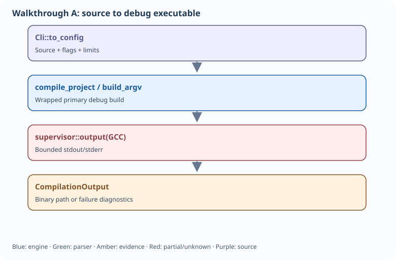
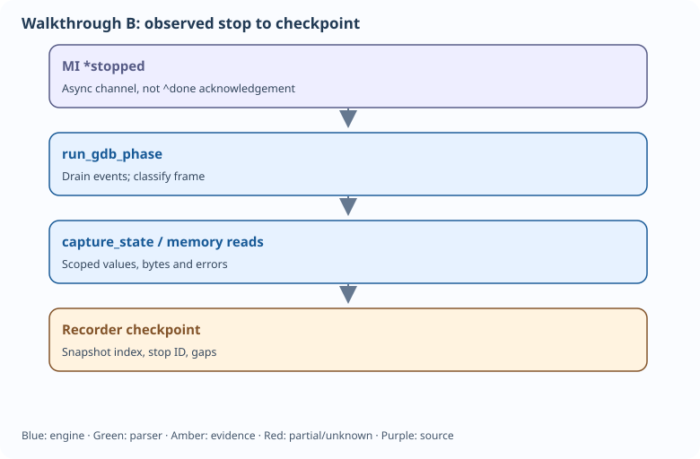
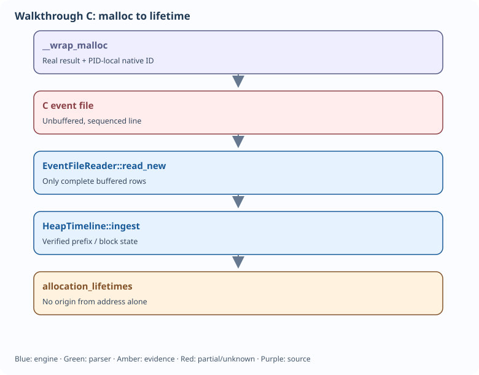
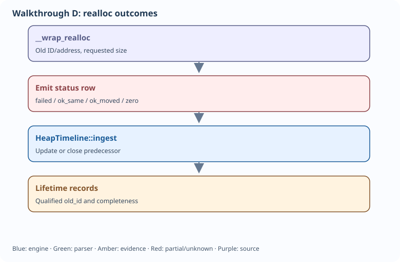
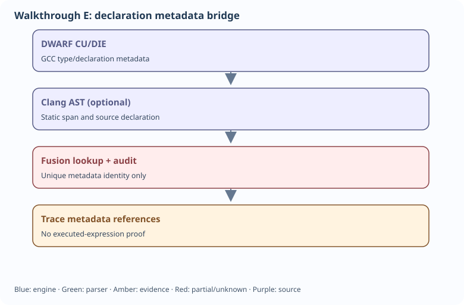
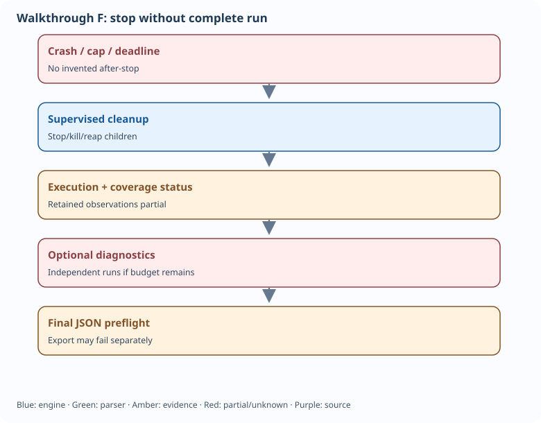

36 · Engine subsystem walkthroughs #
Key terms #
| Term | Plain meaning |
|---|---|
| Call path | The sequence of checked functions and tool boundaries used in a particular explanation. |
| Intermediate data | A record made between input and output, such as a GDB stop or a wrapper event line. |
>
The big picture #
These are six illustrative source-guided sequences, not a transcript of one executed trace. A C statement in an example is not proof that it ran: only a recorded stop, allocation event, or diagnostic from its own execution supports the corresponding claim. The Stage 1 final integrated audit is historical evidence, not a rerun for this page; its fixture counts and outcomes must not be read as measurements of a new invocation. Each walkthrough stops at an engine subsystem boundary rather than following one program end to end.
A. Compiling a C project into two different artifacts #
Example and transition #
fixtures/c/phase8b_defined.c:19-27 contains int *heap = malloc(3 * sizeof(int)); followed by a checked realloc. This source illustrates a build input, not a claim that either call executed. src/main.rs:24-34 converts CLI options to TraceConfig and calls trace::trace_program; src/trace.rs:132-165 validates limits and establishes the overall supervisor::scope deadline. trace_program_inner checks inspection expressions, probes required GCC/GDB and optional Valgrind/addr2line, creates a session directory, then writes the embedded c_runtime/alloc_tracker.c through allocation_tracker::write_runtime_source (src/trace.rs:167-235, src/allocation_tracker.rs:30-37). The resulting tracker_source is a real additional translation unit, not a source rewrite of the user's C.
compiler::compile_project (src/compiler.rs:529-581) detects the accepted diagnostics format and calls compile for the debug variant first. build_argv puts -g -O0 -fno-omit-frame-pointer and the four linker --wrap flags before user flags, then sources, objects and link options (src/compiler.rs:392-451); user flags can override defaults. Only after debug success does compile_project attempt the separate unwrapped sanitized binary, trying address,undefined, then address, then undefined. Its result is a pair of CompilationOutput records: success, exit_code, binary path, diagnostics, raw stderr, and selected diagnostics format (src/compiler.rs:75-97,454-527). The debug artifact is the one GDB later executes; building an ASan artifact does not run it.
detect_diagnostics_format probes JSON, SARIF-to-stderr, then text (src/compiler.rs:130-158); compile normalizes compiler diagnostics, falling back to text_diagnostics for unparseable output/linker errors (src/compiler.rs:232-258,317-390,493-526). supervisor::output enforces a deadline and bounded subprocess output (src/supervisor.rs:226-260). If invocation/deadline fails, trace_program_inner returns a partial trace with compiler stage failed/timed out and subsequent stages skipped (src/trace.rs:238-289). If GCC instead returns a failed debug build, compiled_successfully=false, compile_errors is populated, ExecutionStatus::CompileFailed is recorded and GDB is not started (src/trace.rs:291-349). A failed optional sanitized build keeps a successful debug build and notes degraded diagnostics (src/compiler.rs:552-580, src/trace.rs:392-414). The CLI exports a returned compile-failure trace but exits 2; an operational Err exits 1 (src/main.rs:34-78).
CLI -> trace_program_inner: TraceConfig + session deadline
trace_program_inner -> write_runtime_source: embedded tracker -> session/alloc_tracker.c
trace_program_inner -> compile_project -> compile: debug GCC argv + wrapper TU
compile_project -> compile: optional unwrapped sanitizer variant(s)
compile_project -> trace_program_inner: (debug CompilationOutput, asan CompilationOutput)
trace_program_inner -> trace: compiler StageResult; failed debug build -> skip GDBSource details: entry, compiler, supervision, export.
B. Turning a GDB stop into a source checkpoint #
Example and transition #
fixtures/c/phase8b_defined.c:13-16 has a non-inlined checkpoint function reading a packet, alias, heap element and global. Those expressions describe possible observations; a line number alone cannot establish values or execution. After compilation, trace_program_inner creates UserCodeClassifier, EventFileReader and HeapTimeline, and passes optional dwarf::ObservationTypes to run_gdb_phase (src/trace.rs:416-439). GdbSession::launch starts gdb --nx --quiet --interpreter=mi2, configures all-stop mode, PTY output, arguments and the allocator event-file environment (src/trace.rs:1171-1189, src/gdb_mi.rs:385-511). insert_breakpoint("main"), install_user_entries and run start observed stops; a missing main breakpoint allows execution to completion without intermediate stepping snapshots (src/trace.rs:1226-1249).
MI text is parsed by mi_parser::parse_line; gdb_mi::route_record delivers tokened ^ results to the pending command and asynchronous *stopped records separately, while GdbSession::wait_stopped returns a StoppedInfo with frame/reason/thread information (src/mi_parser.rs:559-636, src/gdb_mi.rs:623-671,2302-2444). At each stop, run_gdb_phase first ingests complete allocator lines, then classifies exit/signal, then checks whether the frame belongs to user code (src/trace.rs:1371-1568). In dual mode, a source checkpoint is created on a changed (file,line,func) or breakpoint hit; repeated same-source instruction stops can still produce instruction events without another snapshot. Source-only mode uses exec_step, whereas dual mode uses exec_instruction; non-user frames are normally finished or continued rather than traced as user instructions (src/trace.rs:1562-1568,1720-1751,1799-1929).
For an eligible checkpoint, gdb_mi::capture_state produces CapturedState with frames, bounded frame-zero variables, optionally caller-frame variables, errors and memory used (src/gdb_mi.rs:1738-1749,1840-1964,2177-2227). recorder::capture_variable_memory attempts actual stopped-inferior byte reads under object/checkpoint budgets, records partial/unreadable status, and leaves initialization_status="unknown" (src/recorder.rs:45-185). push_snapshot spends only the remaining snapshot budget on currently alive observed heap blocks and creates ExecutionSnapshot; capture_requested_globals, memory::enrich_snapshot, finalize_memory_coverage, and Recorder::checkpoint add qualified globals/pointer evidence, memory errors and the checkpoint journal record (src/trace.rs:1609-1677,2179-2304,2356-2476, src/recorder.rs:259-265). SnapshotObservation carries stop_id, instruction position, PID, thread, origin and heap-event count, not an exact allocation-call timestamp. If frame mapping, lexical metadata, reads, budgets, or GDB commands fail, partial captures and errors are retained; capture_or_empty preserves an otherwise lost stop (src/trace.rs:2162-2176).
GDB --MI2 -> route_record -> wait_stopped: tokened result + async StoppedInfo
run_gdb_phase -> EventFileReader/HeapTimeline: ingest available complete lines
run_gdb_phase -> capture_state: bounded frames/variables/bytes at this stop
run_gdb_phase -> push_snapshot: remaining-budget live heap -> ExecutionSnapshot
run_gdb_phase -> globals/enrich_snapshot/finalize_memory_coverage
run_gdb_phase -> Recorder::checkpoint: stop-indexed checkpoint (or explicit cap)Source details: GDB control, MI protocol, recorder, stack capture, heap.
C. From a wrapped malloc to a qualified heap observation #
Example and transition #
fixtures/c/pointer_demo.c:7-19 includes int *heap = malloc(4 * sizeof(int));, writes elements and later frees the block. Illustrative conditional sequence: if that call executes successfully under the wrapped debug binary, __wrap_malloc calls the real allocator exactly once, assigns a process-local ID, emits pid seq malloc id addr size old_id old_addr caller status to the dedicated append-only event file, and inserts the returned address in its fixed table (c_runtime/alloc_tracker.c:343-361,265-287). It does not print allocator events to program stdout. --wrap covers references from linked objects, not allocations internal to shared libraries (c_runtime/alloc_tracker.c:41-47). A failed allocation emits failed and no live block; a zero-sized request may return either NULL or a non-NULL block, so its outcome must come from the event, not the syntax.
EventFileReader::read_new tails at most a 1 MiB segment per stop, buffers an unfinished line, and parse_event_line turns a complete line into RawEvent (src/allocation_tracker.rs:65-159,262-399). HeapTimeline::ingest checks (pid, seq), adds a successful malloc as BlockState indexed by (pid,id) and (pid,address), updates live-byte usage, then appends HeapEvent::Allocated (src/allocation_tracker.rs:406-485,521-605,768-855). A sequence gap, duplicate, malformed transport or retention cap downgrades history; it must not manufacture a live block from later events (src/allocation_tracker.rs:501-567). Recorder::allocations journals newly ingested events with the stop at which they were noticed, not the precise execution stop of the call (src/recorder.rs:267-285). At a later observed checkpoint, push_snapshot calls alive_blocks(pid), reads live memory via capture_variable_memory, and creates HeapBlockInfo with ID/address/extent and read evidence; a block not observed at a stop has no captured bytes for that stop (src/trace.rs:2179-2277, src/allocation_tracker.rs:861-873). memory::enrich_snapshot can annotate pointer address candidates but address equality alone cannot prove pointer origin (src/trace.rs:1667-1672).
After the GDB phase, optional resolve_caller_locations and apply_caller_locations map the wrapper's raw return PC minus the executable bias and one instruction byte back to a file/line; an unresolved address remains a raw PC (src/trace.rs:590-637, src/allocation_tracker.rs:936-1029). final_events and backfill_snapshots widen local IDs only when multiple event PIDs were observed, while correlate_heap_intervals brackets an event between sampled checkpoints; neither backfill nor bracketing fabricates an exact source expression (src/trace.rs:2564-2655). build_heap_state keeps the last bytes previously captured while alive, including on a subsequently freed block, with its original observation stop (src/trace.rs:2658-2715). At a normal terminal boundary verify_event_status checks destructor ACKs and reports absent/damaged transport; the ACK cannot repair missing event lines, and an unobserved forked process is not counted as covered (src/allocation_tracker.rs:178-260, src/trace.rs:477-483,906-943).
linked C call -> __wrap_malloc -> real malloc: result + raw return PC
__wrap_malloc -> event file -> read_new -> parse_event_line: RawEvent(pid,seq,id,...)
HeapTimeline::ingest -> BlockState + HeapEvent (or failed/incomplete evidence)
GDB source stop -> push_snapshot: live block bytes -> HeapBlockInfo
addr2line -> apply_caller_locations; final_events -> checkpoint intervalSource details: allocator runtime, heap reconstruction, recorder, GDB reads.
D. realloc is a new lifetime only when the event says so #
Example and transition #
fixtures/c/heap_provenance_realloc.c:14-45 deliberately contains a 256-to-128 resize, a huge failed resize, a larger resize, realloc(zeroed, 0), and realloc(NULL, 24). These are fixture branches, not guaranteed outcomes on another host: even the variable named same cannot prove same-address reallocation. __wrap_realloc reads its fixed-table predecessor before invoking __real_realloc and emits old_id, old_addr, returned address, new ID and one of new, ok_same, ok_moved, zero or failed (c_runtime/alloc_tracker.c:387-443). For a successful same-address or moved result it allocates a fresh ID and updates the table; failed nonzero resize preserves the original entry. The zero classification describes this runtime's glibc realloc(ptr,0) returning NULL and freeing the old allocation, not a portable C rule. realloc(NULL,n) is classified as new on success or failed on failure (c_runtime/alloc_tracker.c:403-418).
parse_event_line materializes the status as RawEvent (src/allocation_tracker.rs:82-159); HeapTimeline::ingest handles each branch differently (src/allocation_tracker.rs:606-699). OkSame retires the old BlockState and adds a linked successor when IDs differ; only historical event lines that reuse the same ID update the existing size in place. OkMoved retires the old block by address/ID and links the new block via realloc_from_id; New with no observed predecessor begins observation without inventing an old lifetime. Failed appends AllocationFailed without retiring the old block; Zero retires an observed old block and appends a terminal reallocation event without a new live block. retire_block updates live-byte usage; add_block rejects invalid or duplicate IDs/addresses and marks the PID incomplete rather than forcing a chain (src/allocation_tracker.rs:758-807). The successor link in HeapBlockInfo comes from reconstructed event IDs, not an assignment in the C file (src/trace.rs:2566-2597,2662-2715).
At a subsequent source stop, push_snapshot reads only alive_blocks(pid); thus a failed realloc can leave the original eligible for another stopped read, whereas a terminal-free zero event cannot (src/allocation_tracker.rs:861-873, src/trace.rs:2217-2268). correlate_heap_intervals brackets retained realloc events between checkpoint counts; it does not assign an event to the line of observe(same) or a particular execution of a source call (src/trace.rs:2616-2655). An address reused after freeing, an event gap, or a missing ACK must not upgrade an address candidate to predecessor/origin identity. The historical Stage 1 final audit reports a 15-event heap_provenance_realloc.c run, but this page does not rerun or generalize its outcomes.
fixture branch -> __wrap_realloc -> __real_realloc: observed return/status
wrapper -> event file -> RawEvent(old_id,old_addr,id,addr,status)
HeapTimeline::ingest: ok_same/ok_moved -> retire + linked successor
failed -> old remains; zero -> old retired, no successor
GDB checkpoint -> alive_blocks -> optional stopped-byte HeapBlockInfo
final_events/backfill_snapshots -> qualified IDs and checkpoint intervalsSource details: allocator runtime, heap lifetimes, GDB checkpoint, recorder.
E. Static metadata meets runtime evidence without becoming execution proof #
Example and transition #
fixtures/c/ast_source.c:2-17 contains a TAKE macro, struct Point, several allocator calls on one line, a member assignment, and a shadowed value. These are useful static syntax cases; no AST node, initializer or declaration establishes that a call executed or that bytes were initialized. trace_program_inner calls dwarf::extract_excluding on the GCC debug binary and rejects a registry with no eligible project compilation unit (src/trace.rs:351-367,2731-2759, src/dwarf.rs:578-630). This produces a TypeRegistry of units, type entries and declarations while excluding the injected tracker CU. With clang_ast enabled, clang_ast::analyze separately invokes Clang for bounded user translation units and populates SourceMetadataRegistry with translation-unit statuses, declarations and expressions; rejected flags, unavailable Clang, timeout and partial extraction remain explicit (src/trace.rs:368-391, src/clang_ast.rs:180-225,228-389). Clang parsing is opt-in, and its provider may be incompatible with GCC for cross-provider correlation.
Before GDB capture, dwarf::ObservationTypes::new builds declaration/type lookup tables (src/trace.rs:434-437, src/dwarf.rs:879-971). ObservationTypes::enrich attaches type_ref/declaration_ref to a uniquely plausible stopped VariableInfo, possibly supplying a static size only when a runtime extent is absent and storage is known; gdb_mi::capture_state and recorder::capture_global still obtain values, storage and bytes from the stopped inferior (src/dwarf.rs:973-1039, src/gdb_mi.rs:1971-2174, src/recorder.rs:512-647). After heap reconstruction, dwarf::associate matches runtime declarations by recorded full file, declaration line, name and (where available) function; ambiguous or missing matches remain unlinked (src/trace.rs:944-955, src/dwarf.rs:1042-1102). clang_ast::correlate_declarations separately matches AST to DWARF by name/location/kind with a restricted missing-column fallback (src/clang_ast.rs:832-945).
Finally evidence::fuse runs once, without new GDB queries, after runtime observations and heap history exist (src/trace.rs:966-968, src/evidence/mod.rs:33-90). declarations::link_source_members and source_links::link_expressions add eligible member/type references; source_links::link_runtime bridges an observed variable to an AST declaration only through the same unique DWARF declaration ID (src/evidence/mod.rs:56-74, src/evidence/source_links.rs:15-143). heap::correlate delegates to clang_ast::correlate_heap_calls: a unique direct compatible call on a resolved file/line is a candidate, while multiple or macro-expanded calls are ambiguities, never exact event-to-expression execution (src/evidence/heap.rs:8-10, src/clang_ast.rs:947-1053). validation::audit removes dangling newly constructed references, and EvidenceFusionSummary counts retained links/rejections (src/evidence/validation.rs:15-180, src/evidence/mod.rs:77-90). With no static provider fusion stays absent; with AST off, DWARF-only enrichment remains possible but no AST source-expression bridge exists.
GCC debug ELF -> extract_excluding -> TypeRegistry -> ObservationTypes
optional Clang source pass -> analyze -> SourceMetadataRegistry
GDB stop -> capture_state/ObservationTypes::enrich -> VariableInfo + bytes
finished heap + snapshots -> dwarf::associate -> declaration_ref
AST/DWARF location match -> evidence::fuse -> qualified links/candidates
validation::audit -> cleared invalid links + EvidenceFusionSummarySource details: DWARF, Clang AST, evidence fusion, stack observations.
F. A fatal stop or timeout retains evidence without claiming a normal exit #
Example and transition #
fixtures/c/phase8r3_crash.c:1-3 writes through a volatile null pointer while referring to observed_global; it illustrates the fatal-stop path and requested-global capture. fixtures/c/infinite_loop.c:5-12 illustrates an alternative step/deadline path. These are distinct possible executions, not a combined trace; the historical audit reports a fatal-stop fixture and a step-limit fixture, but neither was rerun here (historical audit). run_gdb_phase classifies a reported fatal signal after ingesting event lines; classify_signal treats SIGSEGV and other configured fatal signals differently from resource and benign signals (src/trace.rs:1371-1551,2031-2063). It calls capture_or_empty, push_snapshot and capture_requested_globals even at the fatal stop, enriches the snapshot, records a checkpoint if space remains, then constructs CrashReport from observed signal/frame/backtrace via crash_from and sets ExecutionStatus::Crashed (src/trace.rs:1441-1518,2489-2508). A snapshot-cap failure is recorded as truncation; it does not erase the observed crash. exited-signalled/SIGKILL instead records interruption without inventing a cause (src/trace.rs:1423-1440).
If an execution command times out waiting for *stopped, stop_wait_timeout_status maps that to Timeout; a command-reply timeout before the stage deadline can instead be DebuggerFailure and poison the MI session (src/trace.rs:1754-1797,2069-2089, src/gdb_mi.rs:583-609). The loop also checks source checkpoint, step, instruction, command, output and wall budgets (src/trace.rs:1569-1575,1682-1729,1932-1953). For a nonterminal limit/deadline it kills the inferior tree and marks recording gaps/truncation; normal/crash paths terminate through the other branch (src/trace.rs:1954-2024). A final event read can preserve post-stop events, but verify_event_status and HeapHistoryCoverage explicitly flag missing terminal ACKs or incomplete event transport: a crash generally has no destructor ACK, so observed prefix events do not imply complete heap history (c_runtime/alloc_tracker.c:319-336, src/trace.rs:477-483,851-943). trace_program_inner maps the phase status to debugger/tracker StageResult, ExecutionOutcome, resource counters and CrashReport (src/trace.rs:484-588,1007-1065).
On a crash with a successful sanitized build and matching trigger, run_sanitizer_pass executes the separate ASan/UBSan binary before Valgrind; otherwise OnCrashOrValgrindError can wait for Valgrind findings (src/trace.rs:49-106,644-680,787-848, src/sanitizer.rs:21-79). matches_crash checks actual native source sites before labeling sanitizer reproduction; different-site findings become diagnostic_observed (src/trace.rs:68-86, src/sanitizer.rs:162-185). valgrind::run_valgrind is another independent process with passive wrapper telemetry and XML diagnostics, never the primary GDB execution (src/trace.rs:682-785, src/valgrind.rs:39-132). Missing tools, expired deadlines or malformed XML are stage failures/skips, not clean analyses. The CLI's json_export::export_json_cancellable separately preflights serialized size and may fail export even when a partial trace exists in memory (src/main.rs:34-78, src/json_export.rs:72-75,139-167).
GDB stop -> run_gdb_phase: fatal signal / limit / stop-wait timeout
fatal -> capture_or_empty -> push_snapshot + globals -> crash_from: Crashed
nonterminal timeout/limit -> kill + recorder gap: partial recording
final event read -> verify_event_status -> qualified HeapHistoryCoverage
trace_program_inner -> optional separate sanitizer / Valgrind executions
trace_program_inner -> DebugSessionTrace -> export_json_cancellable (or export error)Source details: GDB failure paths, diagnostics, supervision, recorder, export.
Diagram notes #
Walkthrough A diagram #


Configuration to GCC artifacts.
Walkthrough B diagram #


An observed MI stop to a retained checkpoint.
Walkthrough C diagram #


A wrapped allocation to reconstructed lifetime evidence.
Walkthrough D diagram #


Recorded realloc statuses to branch-specific transitions.
Walkthrough E diagram #


Static declaration metadata to qualified additive references.
Walkthrough F diagram #


A crash or limit through partial evidence and optional separate diagnostics.